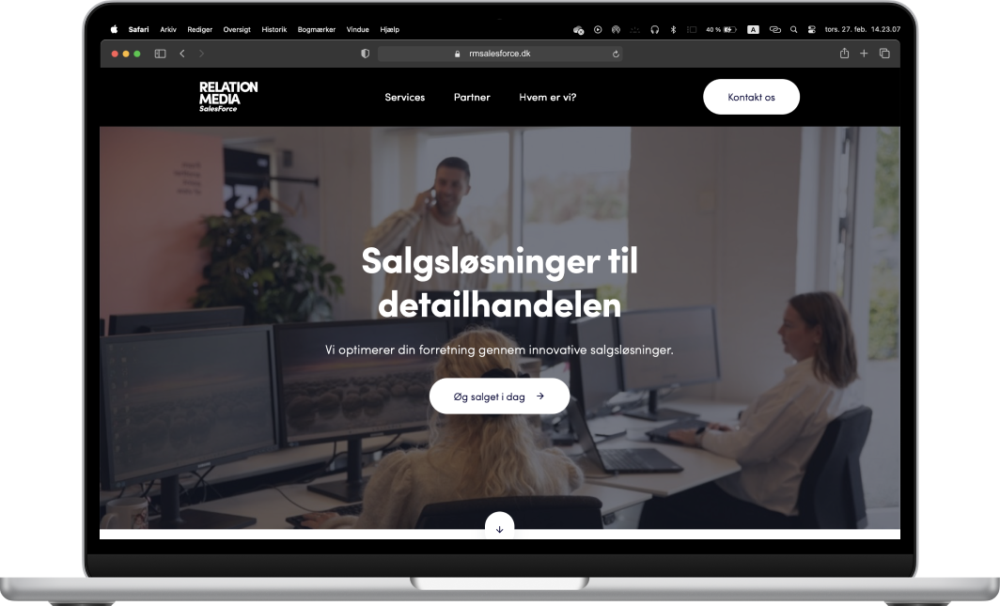
Redesign af hjemmeside – RelationMedia
UX/UI · Indholdsproduktion

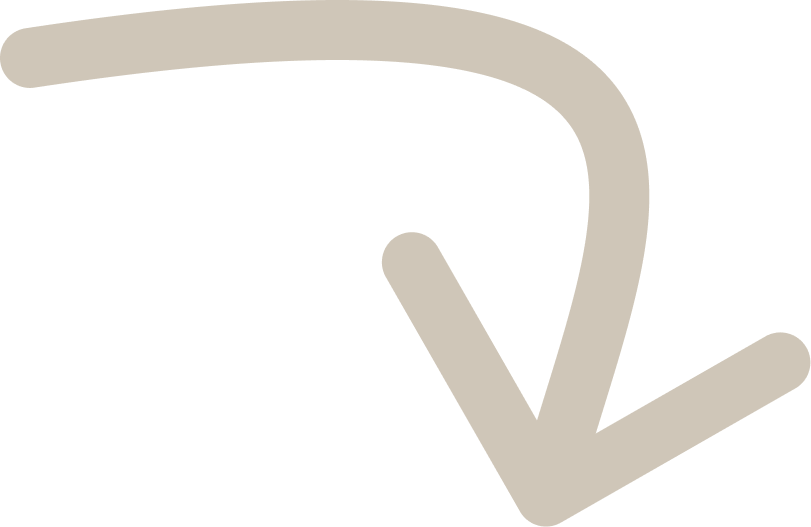
Design & æstetik · Content creation
Hej! Velkommen i mit kreative univers. Jeg er multimediedesigner med passion for visuel æstetik, content creation og digitale oplevelser. Jeg glæder mig til at vise dig, hvem jeg er!
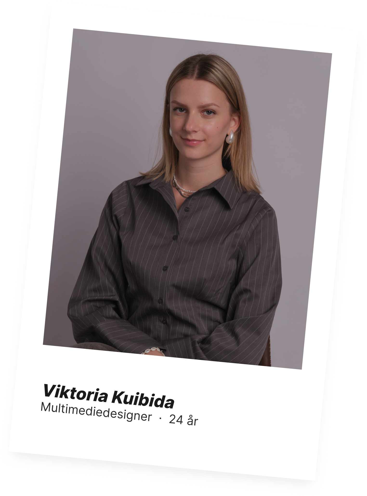
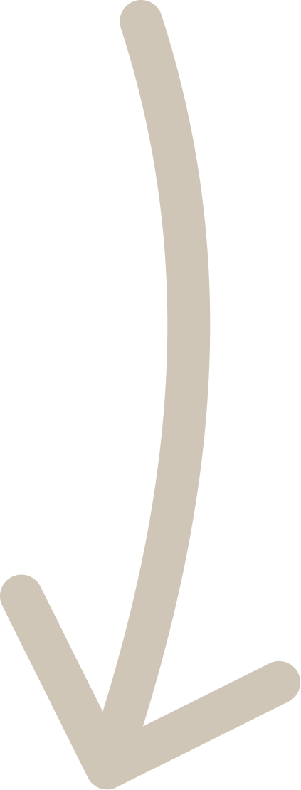
Et udvalg af mine projekter, som jeg har arbejdet på under uddannelsen, i praktikken og som studentermedhjælper.
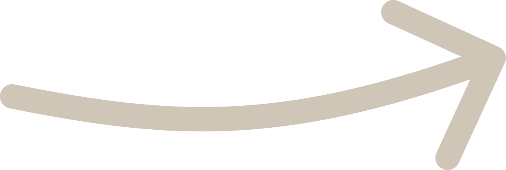
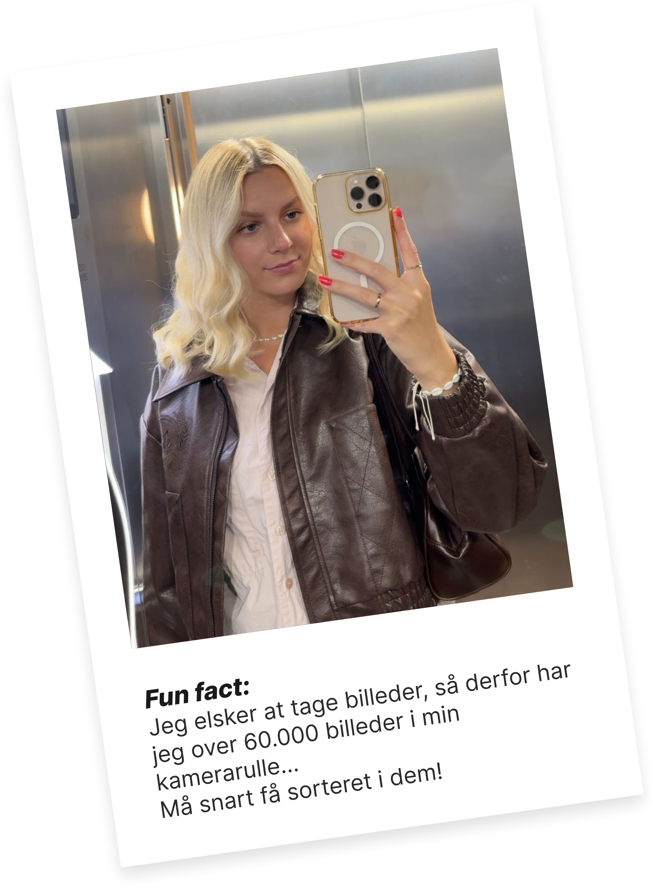
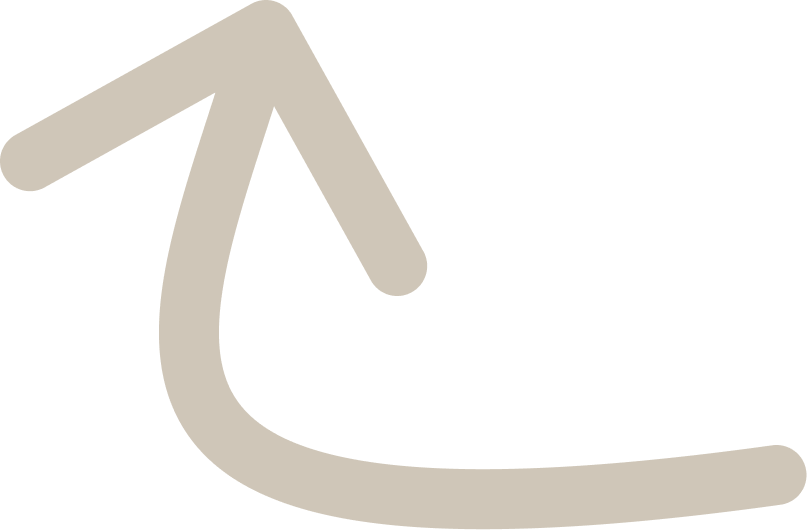
et af mine redskaber
UX/UI · Indholdsproduktion
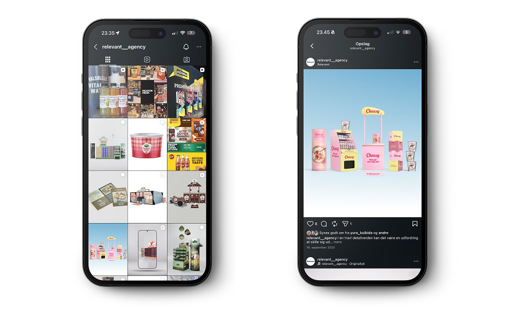
Videoproduktion · Design · Content creation
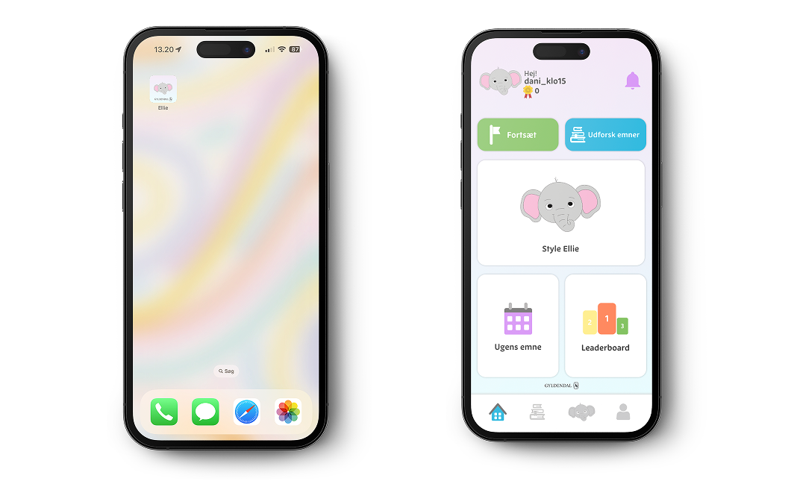
UX/UI · Visuel identitet · Gamerfication
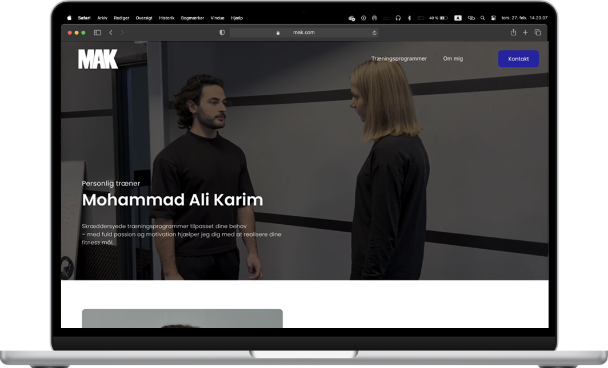
Branding · Content strategi · UX/UI · Visuel identitet
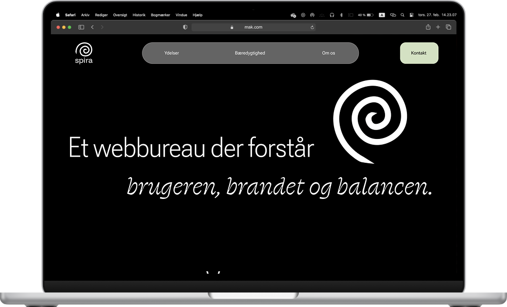
UX/UI · Research
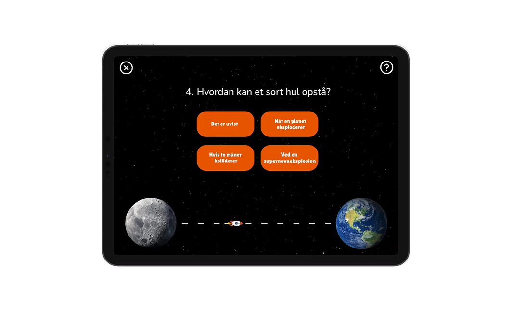
Grafisk design · UX/UI · Gamerfication
Jeg arbejder med contentudvikling, videoproduktion og grafisk design lige nu – og bevæger mig i krydsfeltet mellem kreativitet, struktur og en god brugeroplevelse, uanset om det er på en hjemmeside, i et Instagram-opslag eller noget helt tredje.
Mit ønske er at skabe visuelle løsninger, der fortæller en historie, skaber værdi og understøtter klare formål. Jeg brænder for at arbejde inden for feltet og er altid klar til at tage nye udfordringer.
Se CV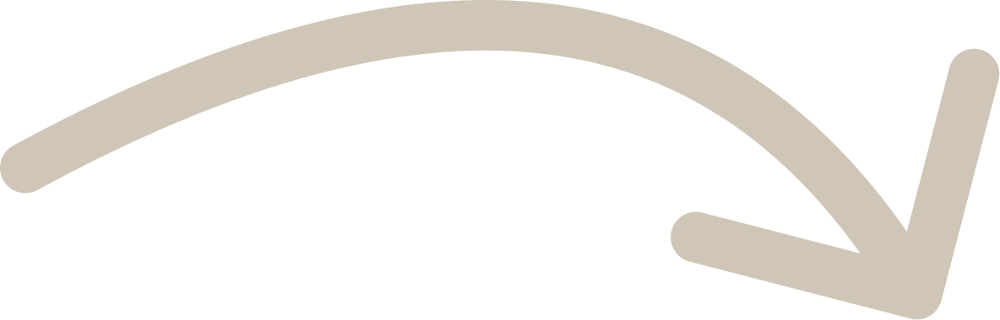
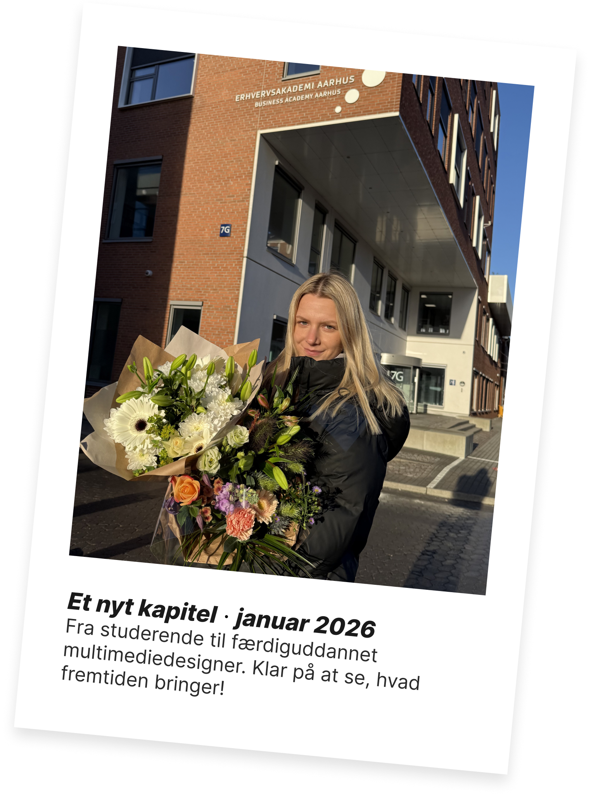
“Viktoria har som SoMe-praktikant haft ansvar for vores egne sociale mediekanaler, hvor hun har bidraget markant til at styrke vores tilstedeværelse. Hun har været med til at sætte en klar retning for kanalerne og arbejdet målrettet og organisk med indhold og udvikling. Viktoria arbejder struktureret, selvstændigt og med en god forståelse for både brand og målgruppe.”
"Jeg har haft fornøjelsen af at samarbejde med Viktoria i flere skoleprojekter, hvor hun har bidraget med kreative idéer og stort engagement. Hun er samarbejdsvillig, ansvarsbevidst og en stærk sparringspartner, der møder op med et positivt og struktureret mindset. Hendes evne til at holde overblik har været med til at sikre effektive processer og gode resultater.”
“Viktoria er en dygtig og selvstændig kollega, der har ydet en værdifuld indsats for vores ukrainske elever. Hun har bidraget til undervisning, fritidstilbud og elevplaner og skabt trygge rammer gennem stærk klasseledelse og relationsarbejde.”
“Viktoria har arbejdet engageret med modtageklasser på Skivehus Skole og haft stort fokus på både elevernes læring og trivsel. Hun bidrager positivt til teamsamarbejdet, tager ansvar og skaber trygge relationer med overskud.”
Som person er jeg lyttende, empatisk og tager ansvar for det, jeg arbejder med. Det kan til tider få mig til at fremstå lidt for seriøs, men det bunder i et stort engagement og et ønske om at levere kvalitet.
Jeg holder af at være sammen med familie og venner, men lader også op gennem fordybelse og tid alene. Det samme gør sig gældende i mit arbejde, hvor jeg både trives i samarbejde og i selvstændige opgaver.
Jeg er optaget af æstetik og smukke omgivelser og forsøger derfor altid at skabe rammer, der er behagelige at være i, da det er noget, der motiverer og inspirerer mig.
Jeg er nysgerrig og motiveres også af konstant udvikling – både fagligt og personligt. Derfor tager jeg konstruktiv feedback til mig som en naturlig del af processen.
Struktur og overblik er vigtigt for mig i hverdagen, selvom jeg altid er åben for det spontane og nye, når muligheden opstår.
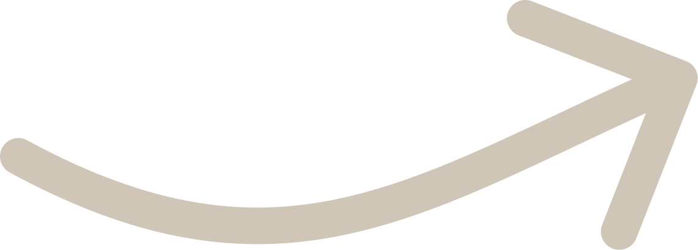
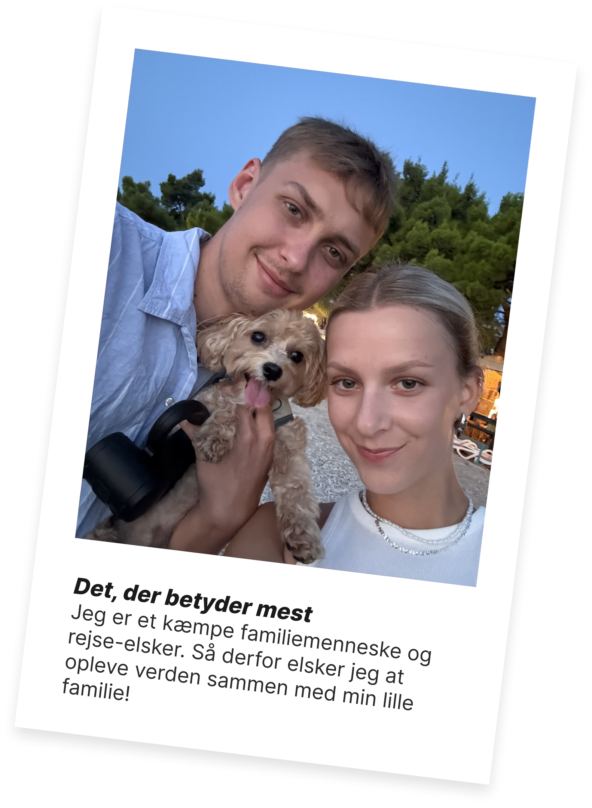
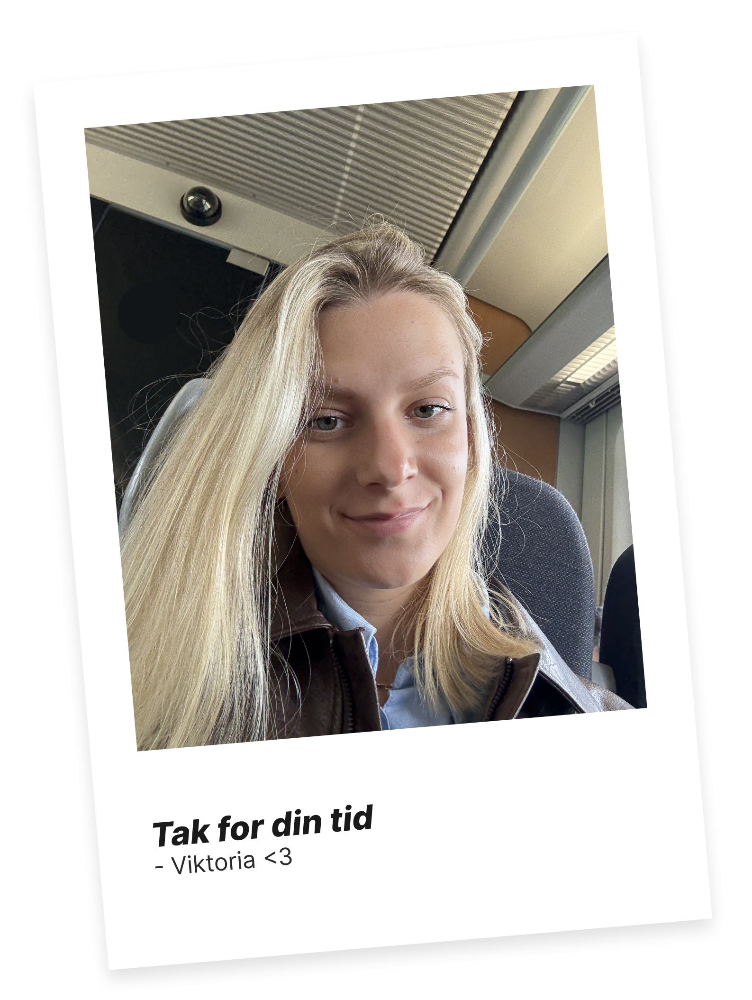
Har du spørgsmål, et projekt i tankerne eller lyst til at høre mere, er du altid velkommen til at tage kontakt.
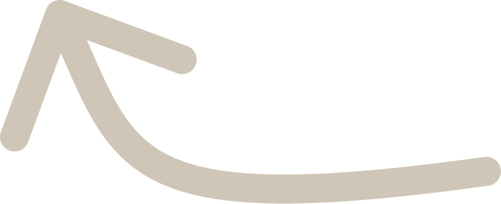